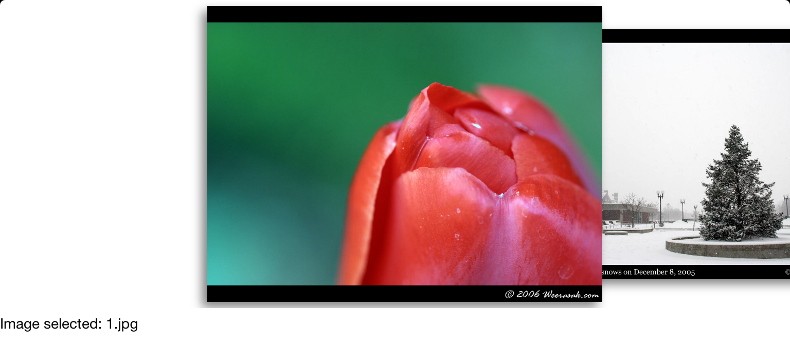

WWSwipeView
Create a horizontal swipeable image view with UITableView-like data source and delegate.
To use
`
import "WWSwipeViewController.h"
@interface YourViewController ()
self.swipeViewController = [[WWSwipeViewController alloc] init];
self.swipeViewController.datasource = self;
self.swipeViewController.delegate = self;
self.swipeViewController.view.frame = CGRectMake(0, 0, [UIScreen mainScreen].bounds.size.width, 300);
[self.view addSubview:self.swipeViewController.view];
`
Add WWSwipeViewDataSource and WWSWipeViewDelegate to provide the number of images and UIIamgeView for each one. Look at WWViewController for an example.